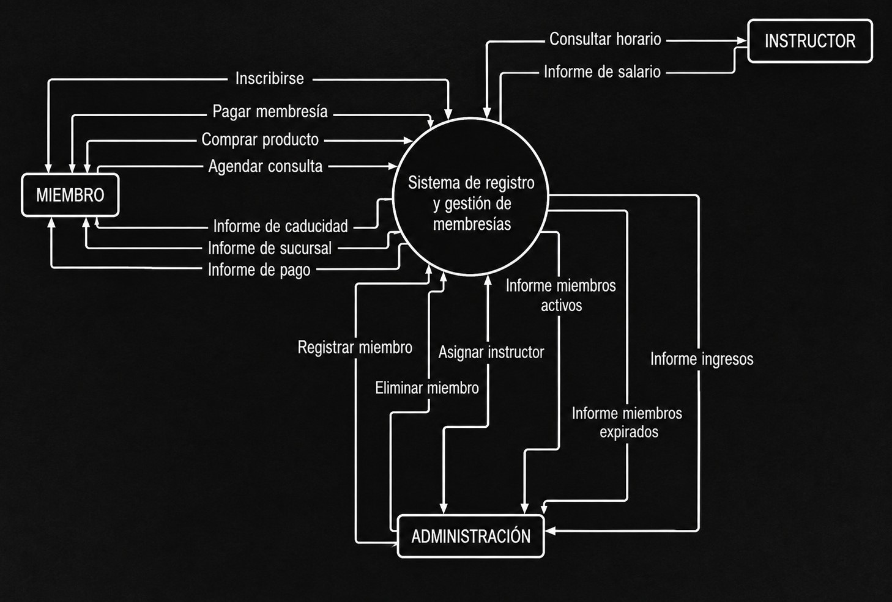
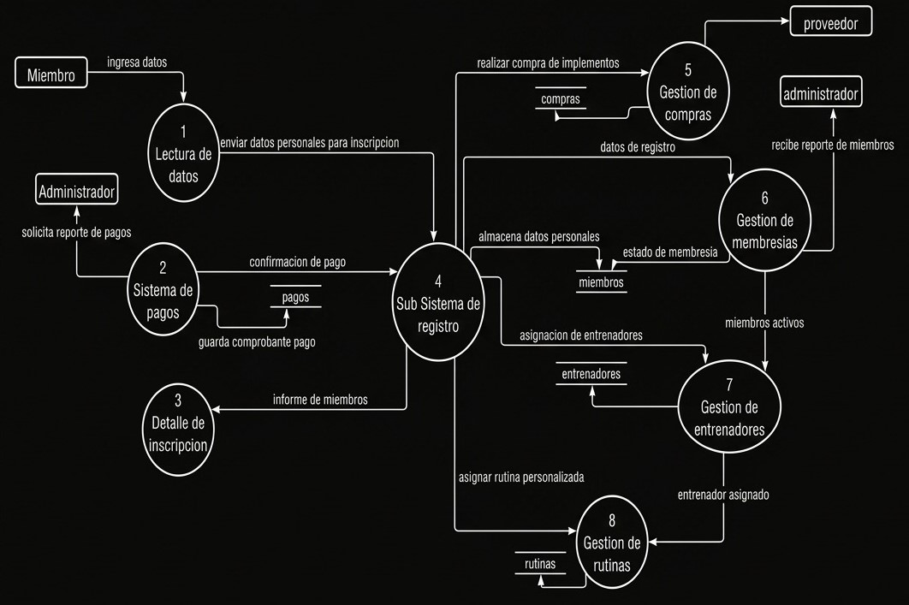
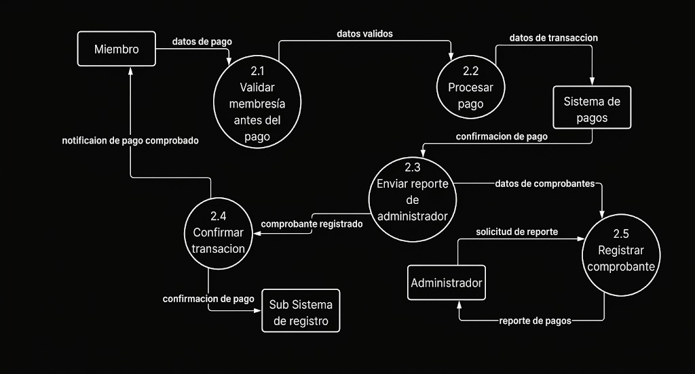
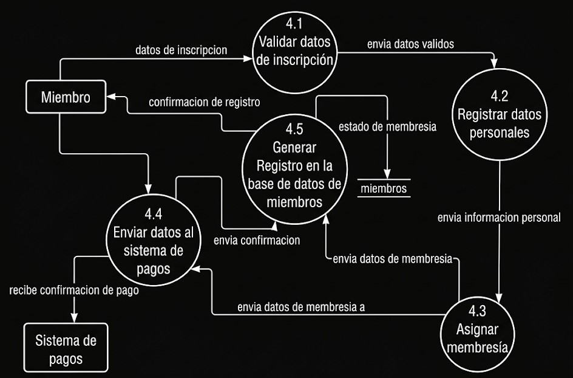

MODELO AMBIENTAL
DECLARACION DE PROPOSITOS
Realizar un Sistema de registro y gestión de miembros nuevos para el gimnasio Fuerza y Hierro. Implementando la virtualidad de inscripción y pagos garantizando una mayor eficacia en la gestión de membresías. Además, se ofrece un seguimiento sobre la durabilidad de dichas membresías y también mostrando información sobre las sucursales y sus respectivos horarios.
DIAGRAMA DE CONTEXTO

LISTA DE ACONTECIMIENTOS
- Una persona podrá realizar la inscripción donde se le pedirán sus datos como nombre completo ,número de carnet y correo electrónico. Con esos datos será posible generar una nueva membresía y su respectiva tarjeta de miembro.
- La persona cliente podrá escoger el plan de membresía o alguna promoción si en caso existiese cuando efectúe la inscripción o renovación de membresía.
- Se le enviará su respectivo informe de pago a la persona con la cantidad y datos ingresados.
- El nuevo miembro del gimnasio tendrá la opción de elegir la forma de pago ya sea por código QR generado ese mismo momento o por tarjeta de crédito.
- Para una persona no será necesario ser miembro del gimnasio para realizar las compras de productos como suplementos o alimentos del lugar. Con el sistema podrá pagarlos con los mismos métodos que escoja.
- Luego de efectuar la inscripción. El miembro tendrá derecho a una consulta con una nutricionista de forma gratuita, tendrá la opción de agendar una consulta de acuerdo al horario de disponibilidad. En caso de querer hacer una re-consulta, ésta tendrá costo.
- El miembro tendrá acceso a todas las sucursales, por lo tanto podrá consultar información de la sucursal que elija.
- La administración podrá registrar nuevos miembros usando los datos para generar una nueva tarjeta de miembro. También podrá eliminar membresías expiradas.
- La administración recibirá informe sobre las membresías activas para tener un control sobre cuáles serán las próximas a expirar. También recibirá informe de aquellos que expiraron y podrá mandar un mensaje al e-mail del miembro informando sobre su expiración y dando la opción de renovación.
- La administración recibirá informe sobre los ingresos resultantes de los nuevos registros y renovaciones de membresías para tener un mejor control económico y poder ver las posibilidades de una posible promoción.
- La administración tendrá control sobre los instructores ya sean los de entrenamiento o los que tienen una disciplina específica. Podrá asignar a cada instructor a una respectiva sucursal y también el horario.
- Un instructor podrá consultar su horario y por ende también su sucursal donde tendrá que presentarse para trabajar.
- El instructor podrá verificar el pago de su trabajo, el sistema le informará sobre el monto y también los detalles del depósito realizado a su cuenta bancaria.
DESCRIPCION
El Diagrama de Contexto presenta el sistema de registro y gestión de
miembros para el gimnasio Fuerza y Hierro como una caja negra que interactúa
con diferentes actores externos y sistemas.
ACTORES EXTERNOS PRINCIPALES
- Miembros: Realizan inscripciones, renovaciones, consultas de membresía y acceso a sucursales
- Administradores: Gestionan miembros, membresías, instructores, reportes e información de sucursales
- Instructores: Consultan horarios, sucursales y validación de pagos
- Sistema de Pagos: Procesa transacciones por código QR y tarjeta de crédito
- Base de Datos de Sucursales: Almacena información de ubicaciones, horarios e instructores
FLUJOS DE INFORMACIÓN PRINCIPAL
El sistema recibe solicitudes de inscripción, renovación y consulta de miembros, procesa transacciones de pago, gestiona horarios de instructores y mantiene reportes actualizados de membresías activas y expiraciones.MODELO DE COMPORTAMIENTO
NIVEL 1

NIVEL 2


DESCRIPCION
El modelo de comportamiento del sistema Fuerza y Hierro se divide en múltiples niveles jerárquicos:
COMPONENTES PRINCIPALES
- Proceso de Inscripción: Captura de datos de miembros, validación y generación de membresías.
- Proceso de Pagos: Integración con pasarelas de pago QR y tarjeta de crédito.
- Proceso de Gestión de Horarios: Asignación de instructores a sucursales y franjas horarias.
- Proceso de Consultas: Validación de membresías, renovaciones y acceso a sucursales.
- Proceso de Reportes: Generación de informes para administración e instructores.
COMPONENTES PRINCIPALES
- Base de Datos de Miembros: Información personal, membresías activas y historial.
- Base de Datos de Pagos: Transacciones, métodos de pago y comprobantes.
- Base de Datos de Sucursales: Ubicaciones, horarios e instructores asignados.
- Base de Datos de Instructores: Datos laborales, especialidades y asignaciones.